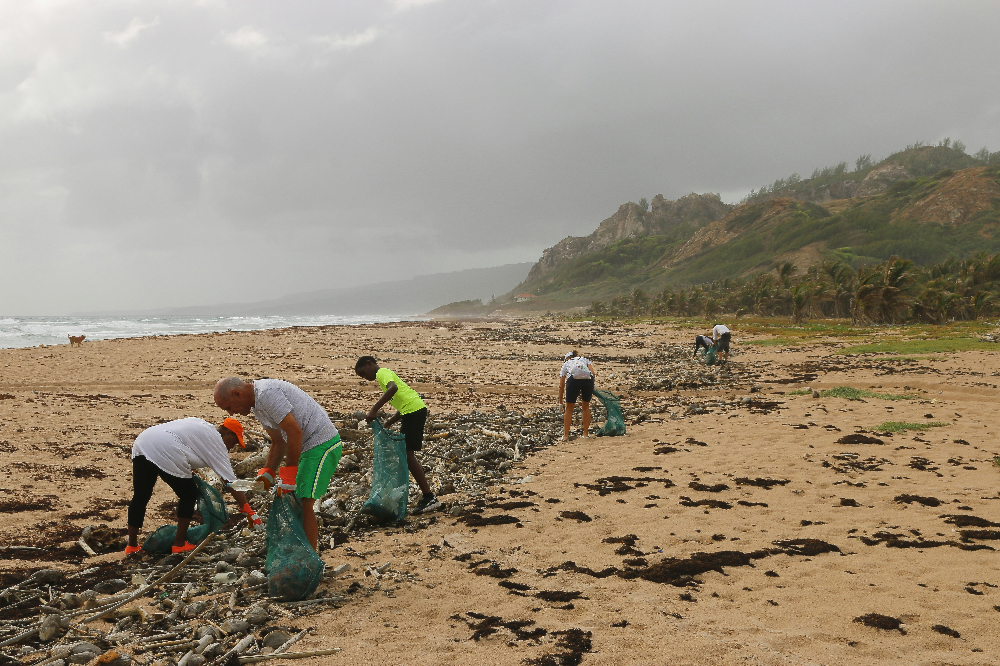

Tentang Naystem
Kenali lebih dekat Naystem dan bagaimana platform ini membantu memantau sampah.


Naystem adalah platform digital yang meningkatkan kesadaran masyarakat tentang dampak sampah dan lingkungan. Melalui Naystem, pengguna dapat mempelajari isu lingkungan serta melihat kontribusi mereka melalui sistem pelacakan sampah. Platform ini juga mendorong penerapan reduce, reuse, dan recycle untuk menjaga keseimbangan alam.
Meningkatkan kesadaran terhadap lingkungan.
Mendorong gaya hidup ramah lingkungan.
Membentuk pola pikir peduli lingkungan.
Alur Naystem
Kenali bagaimana sistem ini membantu mencatat, menganalisis, dan mengelola sampahmu.
Pencatatan
Catat Sampahmu
Catat jumlah dan jenis sampah harianmu agar sistem bisa mengenali pola dan memberi analisis lebih akurat.
Mulai MencatatAnalisis
Dampak & Solusi
Ketahui dampak dari sampah yang kamu hasilkan terhadap lingkungan, serta temukan solusi untuk menguranginya.
Lihat DampaknyaPembelajaran
Materi Sampah
Pelajari informasi tentang jenis sampah, dampaknya, serta cara pengelolaannya melalui materi yang mudah dipahami.
Pelajari SekarangAsisten
Naystem AI
Ajukan pertanyaan seputar sampah dan lingkungan, lalu dapatkan jawaban dan saran yang bisa kamu terapkan sehari-hari.